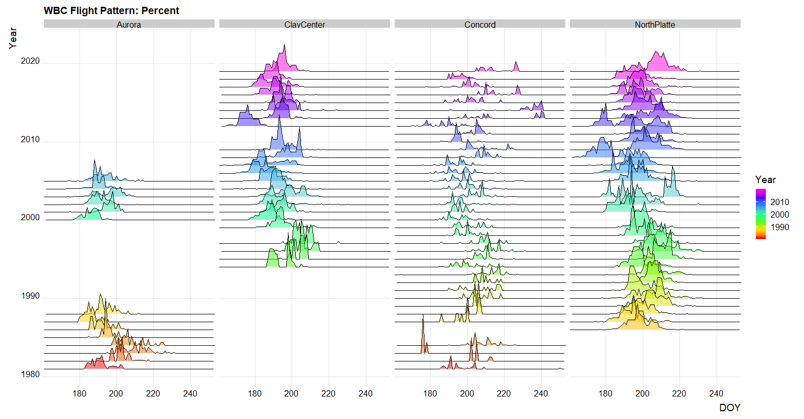

class:primary ## Outline
CASNR Data: Student Success
Visual Inference
Future Thoughts
Brainstorming & Collaboration Discussion
Progress Report & Program of Studies
Moth Flight Data
Impossible & Insane Idea
class:primary ## P.O.W.E.R Survey
- P.O.W.E.R Survey (Purpose, Ownership, Wellness, Engagement, Relationships)
- Sent to all UNL Freshman in the fourth week of the Fall 2019 semeseter (1788 responses, 38.3% response rate)
- 11 Binary Questions
- Outreach to Res Life, Student Inolvement, Big Red Resilience, Office of Academic Success & intercultural Services (OASIS), First-Year Experience and Transition Programs (FYETP), Husker Hub, University Advising
.center[
 ]
—
class:primary
## Student Demographic Data
- Academic Management Information System (AMIS Database) [https://iea.unl.edu/]
- Snapshot of UNL’s data taken each semeseter (Fall, Spring, Summer)
- e.g. age, gender, first time freshman, honors, first gen, athlete, scholarship athlete, resident status, full time or part time, college, degree, department, AP credit, ACT test, HS GPA, transfer student, sections enrolled, final GPA, 2nd year college, 3rd year college, degree in number of years, term graduated, etc.
]
—
class:primary
## Student Demographic Data
- Academic Management Information System (AMIS Database) [https://iea.unl.edu/]
- Snapshot of UNL’s data taken each semeseter (Fall, Spring, Summer)
- e.g. age, gender, first time freshman, honors, first gen, athlete, scholarship athlete, resident status, full time or part time, college, degree, department, AP credit, ACT test, HS GPA, transfer student, sections enrolled, final GPA, 2nd year college, 3rd year college, degree in number of years, term graduated, etc.
- National Survey of Student Engagement (NSSE) Survey [http://nsse.indiana.edu/]
- Five levels: Level of academic challenge, active and collaborative learning, student-faculty interaction, enriching educational experiences, and supportive campus environment.
- UNL participated in the NSSE in 2007, 2010, 2011 (Pilot study), 2012 (Pilot study), 2013, 2016 [response rate: 27% for freshman & 23% for seniors), and 2019 [HIP’s, Inclusiveness and Engagement with Cultural Diversity, Association of American Universities Data Exchange - AAUDE] [https://www.unl.edu/nsse/]
class:primary ## Introduction to Visual Inference
Data plots \(\equiv\) test statistics
Plots of data generated from a null hypothesis (e.g. bootstrapping) using a lineup.
A lineup contians one “guilty” plot randomly placed among a field of “innocent” or null plots.
If the null hypothesis is true then the plot of the data will not be distinguishable from the plots of null data.
Viewers asked to identify the plot that is the most different.
If the viewer identifies the suspect, it lends statistical significance to the conclusion that the data is not consistent with the null data.
Implement study with Amazon Mechanical Turk, a crowd sourcing website.
Using a Binomial Distriution, expect to see the “guilty” plot selected \(\frac{1}{\text{Number of Plots}}\) times by random chance.
- Think 218 with simulated p-values in Chapters 5 and 6.
.right[Based on: Hofmann et al., 2012]
class:primary ## Introduction to Visual Inference
.center[
 ]
.right[Image taken from: Buja et al., 2009]
]
.right[Image taken from: Buja et al., 2009]
class:primary ## Introduction to Visual Inference
.center[
 ]
.right[Image taken from: Buja et al., 2009]
]
.right[Image taken from: Buja et al., 2009]
class:primary ## Future Thoughts - I have found that I enjoy spending my time on: - Experimental Design - Communicating Statistics (e.g. Consulting and Teaching) - Data Science - Nonlinear Analysis - Structural Equation Modleing (SEM)
- Considerations with Sense of Belonging:
- Reliability & validity of survey.
- The survey is binary.
- The questions target different aspects of a student’s sense of belonging, can we tie them all together with psychometrics to come up with one measure?
- Possible directions:
- Combine visual inference and survey data (item response theroy - IRT).
- Detecting bias due to missing data (or correcting for non-response rates)
- Mainstream visual inference into consulting practices.
- Model evaluation / diagnostics of GLMM, Nonlinear Models, and Nonlinear Mixed models using Visual Inference
class:inverse # Brainstorming & Collaboration Discussion
class:primary ## Moth Flight Data

class:primary ## Impossible and Insane Idea - Blumenstock, J., Cadamuro, G., & On, R. (2015). Predicting poverty and wealth from mobile phone metadata. Science, 350(6264), 1073–1076. https://doi.org/10.1126/science.aac4420
- Accurate and timely estimates of population characteristics are a critical input to social and economic research and policy. In industrialized economies, novel sources of data are enabling new approaches to demographic profiling, but in developing countries, fewer sources of big data exist. We show that an individual’s past history of mobile phone use can be used to infer his or her socioeconomic status. Furthermore, we demonstrate that the predicted attributes of millions of individuals can, in turn, accurately reconstruct the distribution of wealth of an entire nation or to infer the asset distribution of microregions composed of just a few households. In resource-constrained environments where censuses and household surveys are rare, this approach creates an option for gathering localized and timely information at a fraction of the cost of traditional methods.
class:primary ## Impossible and Insane Idea
Amigos for Christ (https://amigosforchrist.org/solutions/) .center[
 ]
]Research Question: Estimate the number of households in rural Nicaragua without running water.
They have been collecting data via offline ipads on each community, household, and individuals they have worked with.
Brian Peters, Data Analyst & Field Engineer
- Environmental scientist with significant experience in the non-profit sector and university laboratory setting. Skilled in data analysis, water quality management, stable isotope analysis, Matlab, R, and SQL. Doctor of Philosophy (PhD) focused in Earth Science from Stanford University.